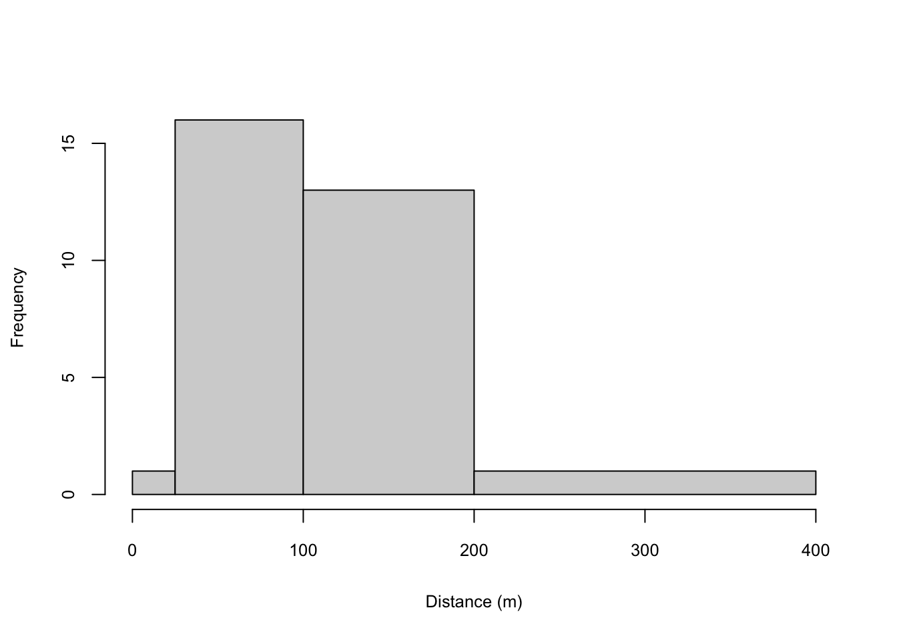
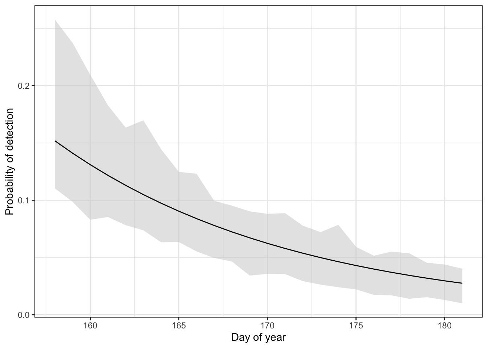

Streaked Horned Lark detectability and abundance: preliminary results
Encounter rates
Streaked Horned Larks were detected at 13% (n = 28) of the 214 points surveyed in the Willamette Valley of Oregon in 2022 (Table 1).
| No. of larks detected | No. of survey points | Frequency |
|---|---|---|
| 0 | 186 | 0.87 |
| 1 | 12 | 0.06 |
| 2 | 8 | 0.04 |
| 3 | 5 | 0.02 |
| 4 | 3 | 0.01 |
However, encounter rates of singing males were slightly lower (Table 2). This is significant because it determines the sample size for the distance-sampling analysis, which is generally conducted only on singing males.
| No. of singing larks detected | No. of survey points | Frequency |
|---|---|---|
| 0 | 194 | 0.91 |
| 1 | 13 | 0.06 |
| 2 | 3 | 0.01 |
| 3 | 4 | 0.02 |
Estimating perceptibility of singing larks with distance sampling
Distance sampling estimates the extent of the decline in an observer’s ability to detect a bird as a function of the distance between the observer and bird. This parameter, referred to here as perceptibility, estimates the probability of detecting a bird within the survey area given that it was present during the survey and that it made itself available for detection, for example by singing. It does not account for birds present but unavailable for detection, for example because they did not sing and remained out of view.
Because distance sampling is sensitive to individual heterogeneity in the shape of the detection function, I adopted standard practice and limited this analysis to singing males. Non-singing males and females may have a different detection function (Table 3) and so including them in the analysis could introduce substantial bias. This decision reduces the sample size considerably; with a greater number of detections, models that include sex and detection type as covariates could be fit.
| Sex | Detection type | Number |
|---|---|---|
| Male | Calling | 1 |
| Male | Singing | 31 |
| Male | Visual | 10 |
| Female | Visual | 7 |
| Unknown | Calling | 4 |
| Unknown | Visual | 2 |
Most of the 31 singing males encountered during surveys were detected in the second and third distance bands (Figure 1). That only a single detection was registered in the first distance band is not unexpected given that the area included in this band is substantially smaller than the area included in the other distance bands.

I considered models in the distance-sampling analysis that included individual effects of four potential covariates on perceptibility: day of the year (“day”), ambient noise (“noise”), temperature at the time of the survey (“temp”), and time of day (quantified as the number of minutes after sunrise (“MAS”) that the survey began). I also considered null models in which no covariates on perceptibility were included. I did not include any covariates on abundance, both because of sample size concerns and because we have yet to generate any covariates that might predict variation in abundance. I did not include models with more than one covariate due to the small sample size. I considered two suites of these individual-covariate models, one that assumed a half-normal (“hn”) detection function and one that assumed a hazard-rate (“ha”) detection function.
The best-supported model in the distance-sampling analysis included an effect of day-of-the-year and a half-normal detection function (Table 4). Model fit was adequate (all P-values for goodness-of-fit testing > 0.12). None of the other covariates had a strong influence on perceptibility. In general, the hazard-rate models performed no better than the half-normal models, but required estimating one additional parameter and so tended to rank beneath half-normal models by about 2 AIC values.
| Model | No. parameters | AICc | Delta AICc | Model likelihood | AICc weight | Log-likelihood | Cum. weight | |
|---|---|---|---|---|---|---|---|---|
| 7 | hnDay | 3 | 247.49 | 0.00 | 1.00 | 0.59 | -120.69 | 0.59 |
| 2 | haDay | 4 | 249.78 | 2.29 | 0.32 | 0.19 | -120.79 | 0.78 |
| 8 | hnNoise | 3 | 252.50 | 5.01 | 0.08 | 0.05 | -123.19 | 0.82 |
| 10 | hnTemp | 3 | 252.68 | 5.19 | 0.07 | 0.04 | -123.28 | 0.87 |
| 6 | hnNull | 2 | 252.73 | 5.24 | 0.07 | 0.04 | -124.34 | 0.91 |
| 3 | haNoise | 4 | 253.83 | 6.34 | 0.04 | 0.02 | -122.82 | 0.93 |
| 5 | haTemp | 4 | 254.00 | 6.51 | 0.04 | 0.02 | -122.91 | 0.96 |
| 9 | hnMAS | 3 | 254.37 | 6.88 | 0.03 | 0.02 | -124.13 | 0.98 |
| 1 | haNull | 3 | 254.53 | 7.04 | 0.03 | 0.02 | -124.21 | 0.99 |
| 4 | haMAS | 4 | 256.57 | 9.08 | 0.01 | 0.01 | -124.19 | 1.00 |
The effect of day-of-year on perceptibility is negative, decreasing substantially throughout the season, such that the probability of detecting a lark, given that it sings, approaches zero by late June (Figure 2). The predicted perceptibility on the median day of surveys was 0.06 (95% CI = 0.03 - 0.10).

With the low estimated perceptibility of larks, the resulting abundance estimate from the best distance model was also quite high: 4.3 larks per km2 (95% CI = 2.2 - 6.9).
Estimating availability of singing larks with removal models
Availabiity is another component of detectability. Availability refers to the probability that a bird present in the count area during the survey produces a cue that can be detected by the observer. In this analysis, I estimated availability in two ways. First, by using a removal model, in which each individual detected is considered to have been removed from the population of individuals present once it produces a cue that is detected by the observer. This approach does not retain the full encounter history generated by the time-of-detection survey method. As a supplement, therefore, I also estimated the probability of availability using the full encounter history for each detected individual (i.e., the series of zeros and ones that indicate whether an individual was observed during each of the 4 survey intervals). In both cases, I considered models with covariates for availability only; I did not consider covariates on abundance.
The best-supported model of availability from the removal analysis indicated an effect of day-of-the-year on availability (Table 5).
| Model | No. parameters | AICc | Delta AICc | Model likelihood | AICc weight | Log-likelihood | Cum. weight | |
|---|---|---|---|---|---|---|---|---|
| 2 | removalDay | 3 | 269.50 | 0.00 | 1.00 | 0.72 | -131.69 | 0.72 |
| 1 | removalNull | 2 | 273.60 | 4.10 | 0.13 | 0.09 | -134.77 | 0.82 |
| 5 | removalMAS | 3 | 274.07 | 4.57 | 0.10 | 0.07 | -133.98 | 0.89 |
| 3 | removalTemp | 3 | 274.24 | 4.74 | 0.09 | 0.07 | -134.06 | 0.96 |
| 4 | removalNoise | 3 | 275.26 | 5.76 | 0.06 | 0.04 | -134.57 | 1.00 |
Availability for detection declined over the course of the season (Figure 3). The estimated probability of availability on the median day of surveys was 0.14 (SE = 0.06). Estimated abundance from this model was substantially lower than than produced by distance sampling, in part due to the higher estimate of detectability: 0.6 birds per km2 (SE = 0.09).

Analyzing the data in mark-recapture format - that is, retaining the full encounter history for each individual - yielded similar results. The best-supported model again indicated an effect of day-of-the-year on availability (Table 6).
| Model | No. parameters | AICc | Delta AICc | Model likelihood | AICc weight | Log-likelihood | Cum. weight | |
|---|---|---|---|---|---|---|---|---|
| 2 | crDay | 3 | 198.02 | 0.00 | 1.00 | 0.42 | -95.95 | 0.42 |
| 5 | crMAS | 3 | 198.43 | 0.41 | 0.81 | 0.34 | -96.16 | 0.77 |
| 1 | crNull | 2 | 200.37 | 2.35 | 0.31 | 0.13 | -98.16 | 0.90 |
| 4 | crNoise | 3 | 202.25 | 4.24 | 0.12 | 0.05 | -98.07 | 0.95 |
| 3 | crTemp | 3 | 202.26 | 4.24 | 0.12 | 0.05 | -98.07 | 1.00 |
Availability for detection declined over the course of the season (Figure 4). The estimated probability of availability on the median day of surveys was 0.13 (SE = 0.05). Estimated abundance was 0.35 birds per km2 (SE = 0.06). Thus, both removal and mark-recapture models yield similar estimates of availability and abundance, with a slight gain in precision associated with use of the full encounter history.
Inference about overall detectability from distance sampling, removal models, and mark-recapture models.
Assuming independence in the probabilities of availability and perceptibility, their product provides an ad-hoc estimate of overall average detectability on the median day of surveys: 0.14 (probability of availability) * 0.06 (probability a lark is detected given that it sings) = 0.01. Because of the seasonal changes in both availability and perceptibility, detectability will be higher than this earlier in the year but lower later in the year.
Joint distance-sampling and removal models
The hierarchical model of Amundson et al. (2014) allows for a unified approach to estimating detectability via distance sampling and time-removal models. I used a similar exploratory approach to constructing the model set, using day-of-year as a distance covariate given its strong support in the distance-sampling analysis. I then added each of the potential covariates to the time-removal portion of the model. For comparison, I also analyzed a null model and two models that included no covariates for the distance model but used time-of-day and time-of-year as covariates on the time-removal portion of the model. The best-supported model included an effect of day-of-year on the distance model and no covariates on the removal portion of the model. None of the covariates had especially strong effects on model fit, as the null model was only ~ 2 AIC points below the best-supported model.
Table 4: Model selection results for hierachical distance-sampling and time-removal models of Streaked Horned Lark detections during surveys in the Willamette Valley of Oregon, 2022.
| Distance covariate | Removal covariate | AICc | ùûìAICc |
|---|---|---|---|
| Day-of-year | - | 296.45 | 0 |
| Day-of-year | Time-of-day | 297.98 | 1.53 |
| Day-of-year | Day-of-year | 298.04 | 1.59 |
| Day-of-year | Noise | 298.44 | 1.99 |
| Day-of-year | Temperature | 298.44 | 1.99 |
| - | - | 298.66 | 2.21 |
| - | Day-of-year | 298.72 | 2.27 |
| - | Time-of-day | 300.09 | 3.64 |
From the best model, the estimated probability of detecting a lark given that it sang was 0.06, the estimated probability of a lark being available given that it was present during the survey was 0.22, and the overall probability of detection was 0.01. This model yielded an abundance estimate of 37.7 larks per km2.
Discussion
Analysis of the 2022 data yielded very low estimates of detectability, which in turn leads to unreasonably high and imprecise estimates of abundance (raw counts are divided by the estimated detectability to yield an estimate of abundance; all things being equal, apparent abundance will increase as detectability declines). Model fit was adequate, however, which suggests that small sample size may be the primary driver of the apparently low detection rates. An important goal for subsequent years should be to increase the encounter rate, as only 10% of points surveyed yielded a singing male.
Increasing the encounter rate could be accomplished via two approaches. First, these preliminary findings suggest that beginning and completing surveys earlier in the year may be beneficial because of the apparently steep decline in availability of larks later in the season. Surveying when singing is more frequent might increase encounter rates by avoiding false absences that arise when surveys yield no detections even though birds were present. Second, refining the definition of the sampling frame may help reduce the number of unoccupied points that are surveyed, although this assumes that points without lark detections in 2022 were unsuitable, rather than being suitable but unoccupied due to small population size.
The time-removal and capture-recapture approaches to estimating availability and abundance performed equally well, with the time-removal models appearing somewhat less precise. However, the time-removal models are less demanding on field observers, and it might be worthwhile to consider whether the burden of tracking individual larks across time intervals is such that field methods should be simplified.